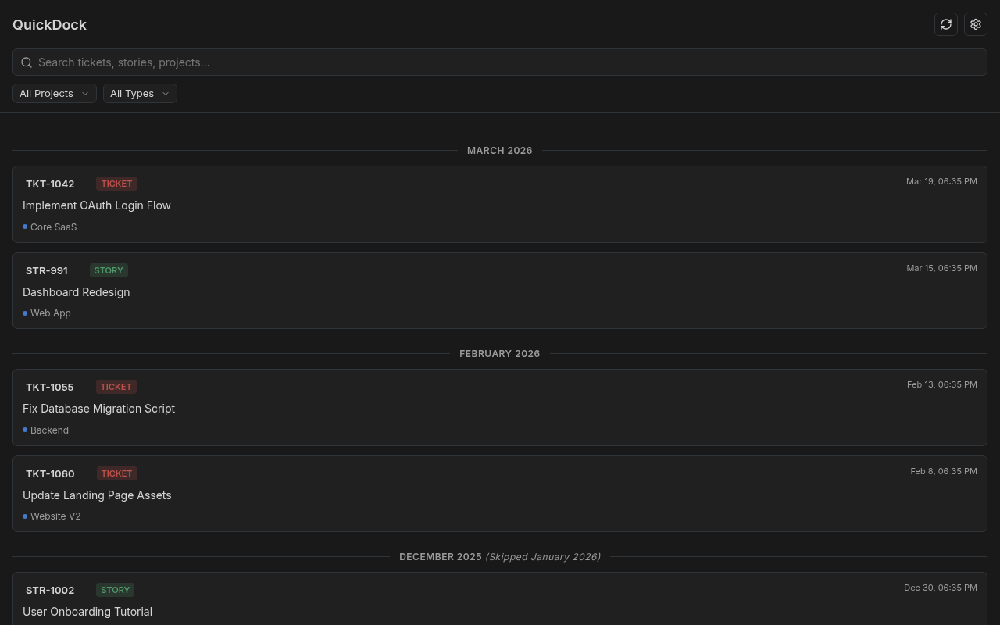
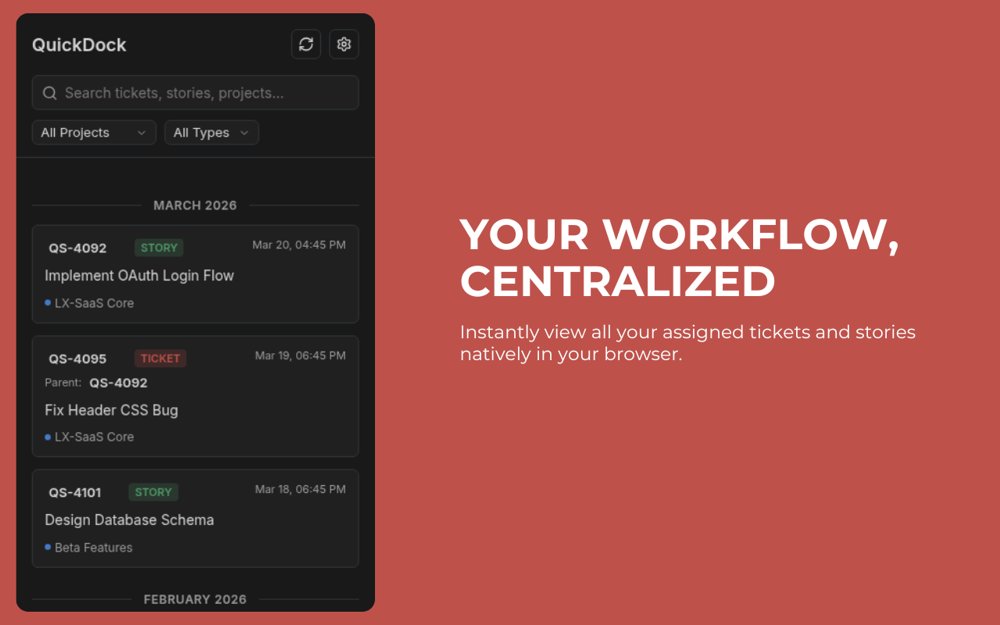
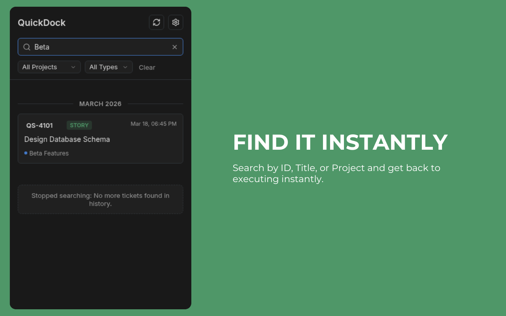
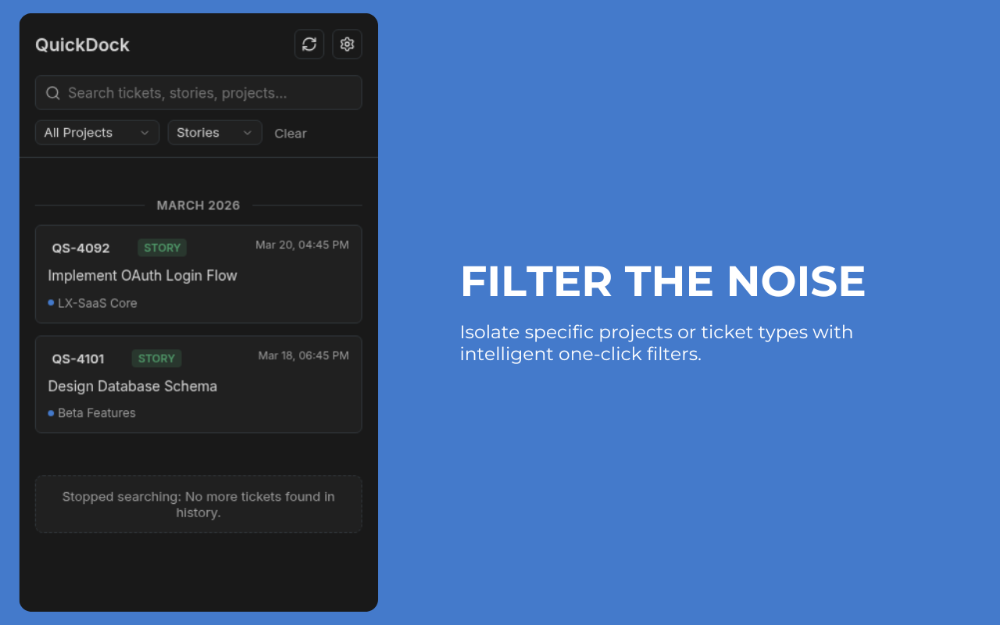
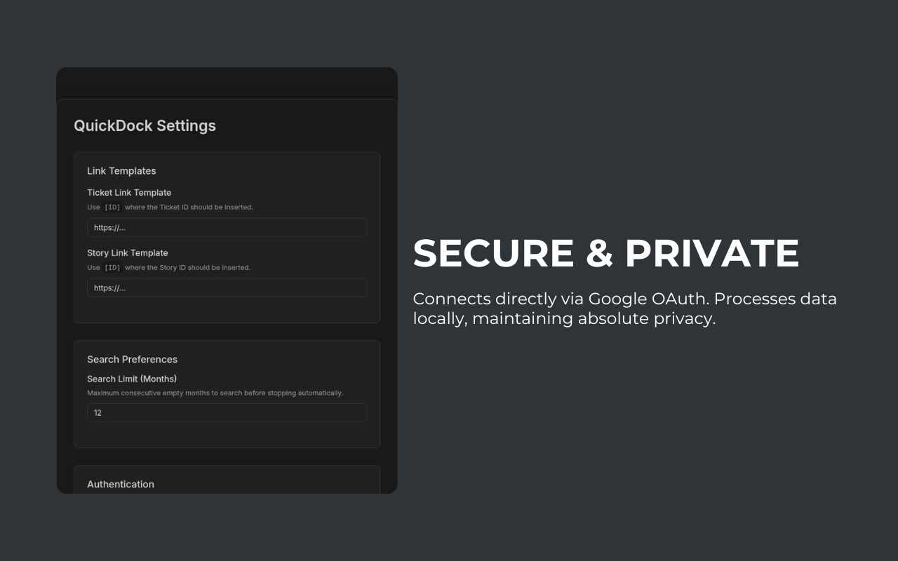
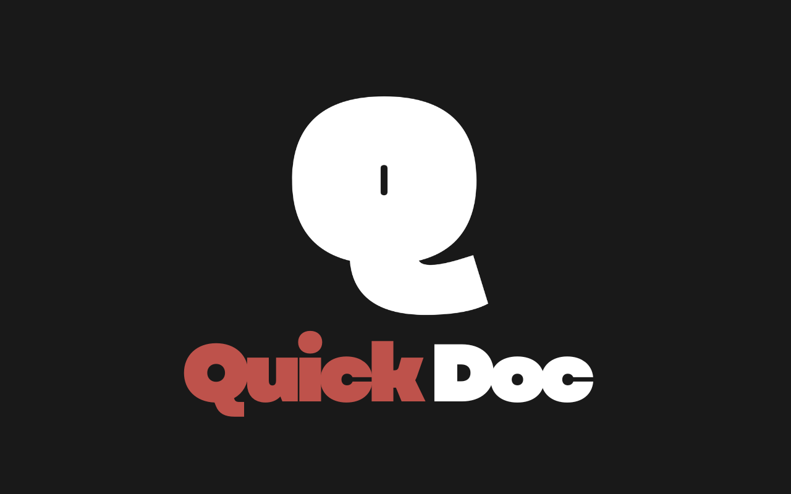

The essential Chrome extension for Agile teams. Navigate, search, and manage Quickscrum tickets and user stories instantly.
Install QuickDock Free
A beautifully organized, intuitive monthly timeline of everything assigned to you. Get an entire breakdown of your workload cleanly formatted like a chat history.

Find what you need in milliseconds. The native search instantly filters tickets by their ID, Title, or Project completely locally—no clunky page reloads required.

Absolute clarity at your fingertips. Rapidly narrow down your responsibilities across multiple active workspaces using intelligent one-click dropdown filters.

Effortlessly scroll back in time. QuickDock intelligently fetches your history on demand, skipping perfectly through empty gaps without hogging your computer's memory.

Completely customize URL routing templates to match your company's domain structure. Everything connects directly via Google OAuth to process data locally without tracking servers.
